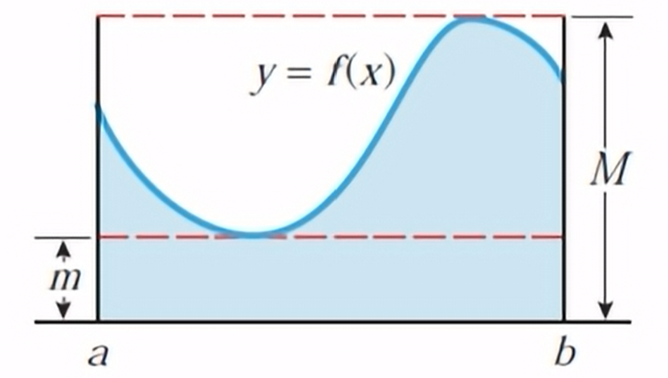

Let \(f\) be continuous on the closed interval \([a,b]\) and differentiable on the open interval \((a,b)\). Then there is at least one point \(c\) in \((a,b)\) such that $$f'(c)=\frac{f(b)-f(a)}{b-a}$$
Between any two points A (\(a, f(a))\) and B (\(b, f(b))\) on the graph of a differentiable function \(f\), there is at least one place where the tangent line to the graph is parallel to the secant line joining A and B.
While this tells us that the point \(c\) exists, it does not tell us how to find it.
Let \(f\) be a continuous nonnegative function on \([a,b]\), and let \(m\) and \(M\) be the minimum and maximum values of \(f(x)\) on this interval. Consider the rectangles of heights \(m\) and \(M\) on the interval \([a,b]\).
It is clear from this picture that the area \(A=\int_a^bf(x)dx\) under \(y=f(x)\) is at least as large as the area of the rectangle of height \(m\) and no larger than the area of the rectangle of height \(M\).
Small rectangle: \(A=m(b-a)\)
Large rectangle: \(A=M(b-a)\)
\(m(b-a)\leq\int_a^bf(x)dx\leq M(b-a)\)
If the integral is between \(m\) and \(M\), then there must be some \(x^*\) such that the height \(f(x^*)(b-a)\) is exactly equal to the area under the curve $$\int_a^bf(x)dx=f(x^*)(b-a)$$
If \(f\) is continuous on \([a,b]\) then there is at least one point \(x^*\) in \([a,b]\) such that \(\int_a^bf(x)dx=f(x^*)(b-a)\). This is an existence theorem.
Find all values of \(x^*\) in the stated interval that are generated by the MVT for \(f(x)=3x^2-2x\) on the closed interval \([1,4]\).
$$\begin{align}\int_a^bf(x)dx &= f(x^*)(b-a) \\ \int_1^4(3x^2-2x)dx &= [3(x^*)^2-2(x^*)](4-1) \\ x^3-x^2\bigg{\vert}_1^4 &= 9(x^*)^2-6(x^*) \\ (4^3-4^2)-(1^3-1^2) &= 9(x^*)^2-6(x^*) \\ 16 &= 3(x^*)-2x^* \\ 3(x^*)-2x^*-16 &= 0 \\ (3x^*-8)(x^*+2) &= 0\end{align}$$ $$x^*=\frac{8}{3}, x^*=-2$$ $$x^*=\frac{8}{3}$$
Note: The value \(x^*=-2\) can be ruled out as it is not in the closed interval \([1,4]\).
This is the theorem used to show that continuous functions have antiderivatives, and that is the underlying principle being the Fundamental Theorem of Calculus Part 2 (FTC-2).